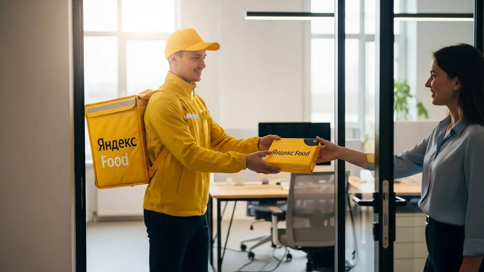
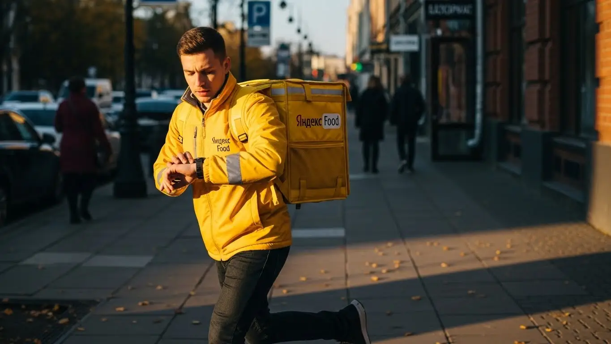
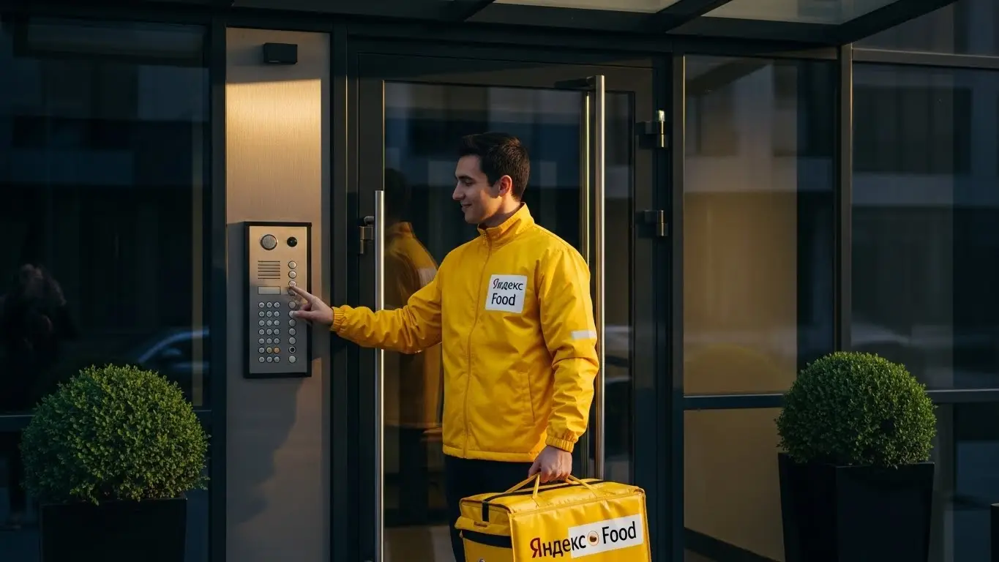
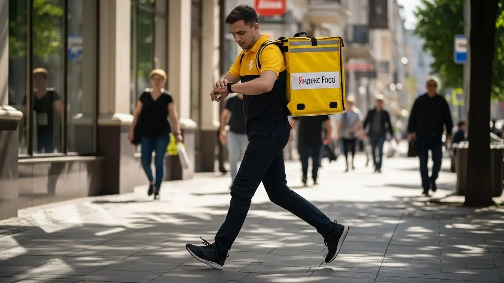

Сколько зарабатывает курьер Яндекс Еды в Кисловодске в 2025-2026 году

- Вакансия курьера Яндекс Еды в Кисловодске: для кого эта работа и что вы получите
- Сколько вы будете зарабатывать курьером в Кисловодске: калькулятор дохода и разбор выплат
- Реальный заработок курьера в Кисловодске: смены и месячный доход
- График работы и форматы занятости
- Требования к кандидату и документы
- Самозанятость, налоги и юридическая чистота
- Пошаговое оформление и первый выход на линию в Кисловодске
- Пешком, на вело или на авто: что выгоднее в Кисловодске
- Районы, маршруты и «топовые» зоны заказов в Кисловодске
- Безопасность, страховка, штрафы и оплата простоя
- Плюсы и возможные минусы работы курьером в Кисловодске
- Реальные истории и отзывы курьеров из Кисловодска
- Ответы на главные вопросы о работе курьером Яндекс Еды в Кисловодске
- Короткие ответы на главные вопросы
- Итоги и ваш следующий шаг
Все города
Думаешь, работа курьером в Кисловодске — это просто крутить педали по Курортному бульвару и развозить шашлыки туристам? А как насчёт убить ноги на наших горках за первый же день, встрять в пробке на проспекте Победы в час пик или понять, что твой доход едва покрывает ремонт велика? Я здесь, чтобы рассказать, как на самом деле выглядит работа и подработка курьером в Яндекс Еде в Кисловодске — без розовых очков и рекламных обещаний.
Поверь, разница между тем, кто зарабатывает 3-4 тысячи в день, и тем, кто едва отбивает бензин, — в знании местной «кухни». И я не про хычины. Я про то, в каких районах есть спрос после девяти вечера, как алгоритм Яндекса видит наши горки и узкие улочки, и какие скрытые расходы съедят твою прибыль, пока ты этого даже не заметишь. Большинство новичков в Кисловодске наступают на одни и те же грабли: берут заказы в «мёртвые» зоны, неправильно выбирают транспорт для нашего рельефа и в итоге разочаровываются. Чтобы сразу оценить условия, посмотреть калькулятор дохода и подать заявку, можно заглянуть на официальную страницу, где собрана вся актуальная информация: работа курьером Яндекс Еда в Кисловодске.
В этом гиде мы честно разберём, какой транспорт лучше выбрать для Кисловодска — авто, велик или свои двое. Посчитаем реальный, а не рекламный доход с учётом налогов и амортизации. Я покажу на карте самые «хлебные» районы и время, когда заказов больше всего. Выясним, как погода и турсезон влияют на заработок, и как не нарваться на штрафы, которые съедят дневную выручку.
Меня зовут Алексей. Я сам не один год откатал с жёлтой сумкой по этим улицам, а сейчас у меня свой небольшой таксопарк-партнёр, так что я вижу всю эту систему с двух сторон. Никакой воды и рекламы, только мясо: мой личный опыт, цифры и советы, которые помогут тебе не просто попробовать, а реально заработать в нашем городе. Так что пристёгивайся (или зашнуровывай кроссовки), сейчас всё разложу по полочкам.
Прежде чем нырять в детали, давай быстро пробежимся по главным темам статьи. Это поможет сориентироваться.
Что ты точно узнаешь из этого гида по Кисловодску
В этой статье ты ТОЧНО узнаешь:
- Сколько реально можно заработать в Кисловодске за смену и за месяц, если работать пешком, на велосипеде или на авто.
- В каких районах города больше всего заказов и как кисловодский рельеф влияет на выбор транспорта.
- Как выбирать время и зоны в приложении «Яндекс Про», чтобы ловить пиковые коэффициенты и не сидеть без заказов.
- За что могут понизить рейтинг или ограничить доступ к заказам и как работает бесплатная страховка на смене.
- Как за 10 минут оформить самозанятость, сколько платить налогов и какие документы нужны для старта.
А если тебе некогда читать всю статью — переходи сразу к заключению, где ты найдёшь короткие ответы на все эти вопросы и указания, в каких разделах искать подробности.
А чтобы сразу увидеть ключевые цифры по доходу и условиям, вот наглядная инфографика.
Работа курьером в Кисловодске: ключевые цифры
Вакансия курьера Яндекс Еды в Кисловодске: для кого эта работа и что вы получите
Кому подойдёт эта работа в Кисловодске
Эта работа — универсальный конструктор. Если ты студент и ищешь, как заработать на свои расходы, не бросая учёбу, — это твой вариант. Выходишь на пару часов после пар, выполняешь несколько заказов и получаешь деньги. То же самое, если у тебя есть основная работа, но нужна подработка: можно выходить по вечерам или в выходные. Это вакансия со свободным графиком, который ты полностью подстраиваешь под себя.
Для тех, у кого пока нет опыта работы, это идеальный старт. Никто не будет требовать диплом или резюме на три страницы. Нужен только смартфон с приложением «Яндекс Про», желание двигаться и быть вежливым с людьми. Если у тебя есть свой автомобиль, ты можешь стать водителем-курьером и рассчитывать на более высокий доход, выполняя заказы Яндекс Еды и Яндекс Доставки по всему городу. В общем, это работа для тех, кому важна свобода, быстрые деньги и понятные правила, без начальников и офисной рутины.
Главные преимущества для жителей районов Центр, Въезд, Санта-Барбара
Главный плюс работы в Кисловодске — ты можешь выполнять заказы буквально у себя под боком, не тратя время и деньги на дорогу до «офиса». Через приложение «Яндекс Про» ты сам выбираешь локацию, в которой хочешь работать. Это значит, что не придётся ехать с одного конца города на другой, чтобы начать смену.
Например, если ты живёшь в районе Въезда, можешь спокойно брать заказы из местных кафе и магазинов, доставляя их по соседним улицам. Жителям Санта-Барбары тоже не нужно стремиться в самый центр — там хватает своих точек общепита и продуктовых, откуда постоянно идут заказы. Ну а если ты из Центра, то ты уже в гуще событий, где спрос на доставку есть почти всегда, особенно в районе Курортного бульвара.

Краткое обещание по доходу и условиям
Давай по-честному и без пустых обещаний. Работая курьером в Кисловодске, можно стабильно зарабатывать. Если выходить на полную смену (8–10 часов), реальный доход в день составит от 2500 до 4000 рублей, в зависимости от способа доставки и спроса. В месяц при полной занятости автокурьеры делают 65 000 – 80 000 рублей. Если нужна подработка на 3–4 часа в день, можешь рассчитывать на 1000–1500 рублей за смену.
Ключевые условия работы простые и прозрачные. Одно из главных преимуществ — ежедневные выплаты: деньги приходят на карту каждый день, не нужно ждать зарплаты неделями. График ты составляешь сам, а начать можно без опыта — всему научат в процессе короткого онлайн-обучения. Никаких сложных собеседований и испытательных сроков.
Вот живой пример. Студент медколледжа из района Въезда вечерами после пар выходит на 3–4 часа на велосипеде. Катается в основном по центру, где много ресторанов на Курортном бульваре. За вечер спокойно делает 1200–1500 рублей, а в выходные выходит на полный день и зарабатывает до 3000. Деньги получает сразу — хватает и на жизнь, и на свои желания, при этом работа не мешает учёбе.
В итоге, эта вакансия — отличный вариант для тех, кто ценит гибкость и хочет получать деньги здесь и сейчас. Главное — работать можно рядом с домом, что в Кисловодске очень удобно. Совет новичкам: начинайте со своего района. Так вы быстрее освоитесь, будете знать все короткие пути и не потратите время на изучение новой территории.
Сколько вы будете зарабатывать курьером в Кисловодске: калькулятор дохода и разбор выплат
Из чего складывается доход курьера
Твой заработок — это не просто фиксированная ставка, а сумма нескольких частей. Во-первых, это базовая оплата за каждый выполненный заказ, которая включает подачу в ресторан или магазин и доставку клиенту. Во-вторых, к этому добавляется плата за расстояние — чем дальше везти, тем больше заплатят. Система всё считает автоматически, тебе не нужно забивать голову расчётами.
Кроме того, есть повышающие коэффициенты. В часы пик (обед, ужин), в плохую погоду или в праздники, когда заказов много, а курьеров мало, стоимость доставки умножается на этот коэффициент. На карте в приложении «Яндекс Про» такие зоны подсвечиваются — там заработок выше. Сервис также начисляет персональные бонусы за выполнение определённого количества заказов. И не забывай про чаевые от клиентов — всё, что они оставляют, идёт тебе, сервис не берёт с них ни копейки.
Наконец, есть две важные гарантии, которые защищают твой доход. Первая — это оплата простоя: если ты вышел на запланированный слот, а заказов временно нет, сервис всё равно начислит минимальную сумму за это время. Вторая — возможная компенсация проезда на общественном транспорте, если заказ очень далёкий и его неудобно выполнять пешком.
Как пользоваться калькулятором дохода
Чтобы прикинуть свой будущий заработок, есть специальный калькулятор. Пользоваться им элементарно. Сначала выбираешь свой город — Кисловодск, и указываешь, как планируешь доставлять: пешком, на велосипеде или на своём авто. Это важно, потому что от способа доставки сильно зависит потенциальный доход.
Дальше ты просто двигаешь ползунки, устанавливая, сколько часов в день и сколько дней в неделю ты готов работать. На основе этих данных калькулятор покажет тебе примерный диапазон заработка за день и за месяц. Понятно, что это не точная цифра до копейки, а ориентир, основанный на средних показателях по городу. Но он отлично помогает понять, на что можно рассчитывать при разной занятости.
Калькулятор дохода курьера в Кисловодске
8 часов
5 дней
Расчёт основан на средней ставке по городу (~425 ₽/час) и является ориентировочным. Реальный доход зависит от спроса, бонусов и вашего графика.
Чтобы увидеть самые актуальные условия, требования и сразу подать заявку, загляни на официальную страницу — там всегда свежая информация. Вот ссылка: работа курьером Яндекс Еда в твоём городе. Там же найдёшь подробный FAQ и сможешь ещё раз всё прикинуть.
Примеры расчёта для пешего, вело- и авто‑курьера в Кисловодске
Давай разберём на конкретных примерах для Кисловодска, чтобы было понятнее.
- Пеший курьер. Студент, который работает по 4 часа вечерами 5 дней в неделю. В основном в центре, в районе Курортного бульвара, где много кафе и небольшие расстояния. За смену можно сделать 8–10 заказов. Доход составит примерно 1000–1400 рублей в день или около 20 000 – 25 000 рублей в месяц.
- Велокурьер. Работа по 6–8 часов в день, 5 дней в неделю. На велосипеде ты мобильнее, можешь обслуживать не только центр, но и спальные районы вроде Санта-Барбары. Заказов получается больше, 15–20 за смену. В таком режиме дневной заработок будет в районе 2200–2800 рублей, а месячный доход может достигать 45 000 – 55 000 рублей.
- Водитель-курьер на авто. Полная смена, 8–10 часов. На машине доступны любые районы Кисловодска и даже пригороды. Можно брать крупные заказы из супермаркетов и работать в любую погоду, когда коэффициенты максимальные. Дневной доход может составлять 3000–4500 рублей. При полной занятости это выливается в 70 000 – 85 000 рублей в месяц до вычета расходов на бензин.
Вот реальный пример из Кисловодска: водитель-курьер, раньше работал в такси. Сейчас переключился на доставку на своём авто. Он выходит на линию около 11 утра и работает до 9 вечера с перерывом. Берёт заказы по всему городу, часто возит из гипермаркета на окраине в спальные районы. В плохую погоду, когда все сидят дома, у него самый заработок — коэффициенты взлетают. В среднем за день выходит 3500–4000 рублей. За вычетом бензина и налога чистыми в месяц получается около 75 тысяч. По его словам, это стабильнее и спокойнее, чем возить людей.
Таким образом, твой доход напрямую зависит от того, как ты работаешь. Это не фиксированная зарплата, а гибкая система, где ты сам влияешь на итоговую сумму. Главный совет — следи за картой спроса в приложении «Яндекс Про». Не сиди на месте в «синей» зоне, двигайся туда, где карта «горит» фиолетовым или красным. Там и заказов больше, и оплата выше.
Реальный заработок курьера в Кисловодске: смены и месячный доход
Теперь к главному — к деньгам. Сколько на самом деле можно заработать в Кисловодске, работая курьером? Сразу скажу: золотых гор без усилий не бывает, но при грамотном подходе доход будет стабильным и достойным. Твой реальный заработок — это не просто ставка в час, а результат твоей стратегии: когда, где и как ты работаешь. В нашем курортном городе есть своя специфика, особенно сезонность, которую нужно учитывать.
Твой доход складывается из оплаты за заказ и расстояние, доплат за высокий спрос (те самые «фиолетовые зоны» на карте), бонусов за выполненные цели и, конечно, чаевых от клиентов. В Кисловодске, где много отдыхающих, чаевые могут составлять приличную часть заработка, особенно если работать на совесть и аккуратно доставлять заказы в термосумке. Главное — понять, как работает система, и использовать её в свою пользу.

Диапазон дохода для подработки и полной занятости
Цифры всегда зависят от того, сколько времени ты готов уделять работе и какой у тебя транспорт. В Кисловодске, с его холмистым рельефом, разница между пешим курьером и водителем будет ощутимой.
Если ты ищешь подработку на 2–4 часа в день, например, после основной работы или учёбы, то расклад примерно такой. Пеший или велокурьер, работая в пиковые вечерние часы в центре, может зарабатывать 800–1500 рублей за смену. Автокурьер за то же время сделает больше за счёт скорости и дальности заказов — его доход может составить 1200–2000 рублей. В месяц на подработке выходит от 20 000 до 40 000 рублей, что неплохо для дополнительного дохода.
При полной занятости (8–10 часов в день, 5-6 дней в неделю) цифры совсем другие. Пеший курьер или велосипедист в Кисловодске может рассчитывать на 45 000 – 65 000 рублей в месяц. А вот водитель на своем авто, который не боится дальних заказов в пригороды или в плохую погоду, может зарабатывать и 70 000 – 90 000 рублей. Конечно, из этой суммы нужно вычесть расходы на бензин, но и заказы для курьеров на автомобиле обычно оплачиваются выше.
Сравнение дохода в Кисловодске по форматам занятости
| Параметр | Подработка (2-4 часа/день) | Полная занятость (8-10 часов/день) |
|---|---|---|
| Пеший / Велокурьер | 800 – 1 500 ₽/смена | 45 000 – 65 000 ₽/месяц |
| Автокурьер | 1 200 – 2 000 ₽/смена | 70 000 – 90 000 ₽/месяц (до вычета расходов) |
Как район, время суток и погода влияют на доход
Твой заработок напрямую зависит от трёх вещей: где, когда и в какую погоду ты работаешь. Поняв эти принципы, ты сможешь зарабатывать больше, работая столько же. В Кисловодске это особенно заметно. Самые «хлебные» часы — это обеденный пик с 12:00 до 15:00 и вечерний с 18:00 до 22:00. В это время люди массово заказывают еду из ресторанов. Пятница, суббота и воскресенье — это вообще отдельная история, спрос максимальный.
Погода — твой лучший друг. Как только начинается дождь, сильный ветер или, зимой, снегопад, большинство людей предпочитают остаться дома. Спрос на доставку взлетает, на карте в «Яндекс Про» появляются зоны с повышенными коэффициентами. Заказы в такую погоду оплачиваются в 1.5–2 раза дороже. Клиенты тоже становятся щедрее на чаевые, понимая, что ты работаешь в непростых условиях. То же самое касается и пика туристического сезона летом — заказов становится в разы больше.
Район тоже решает. В Кисловодске самые горячие точки — это Курортный бульвар и прилегающие улицы, где сосредоточены кафе и рестораны. Также много заказов из крупных жилых комплексов и санаториев, которые разбросаны по всему городу. Не стоит игнорировать спальные районы, например, в районе улицы Широкой — там меньше конкуренции среди курьеров, а заказов из магазинов хватает.
Советы по увеличению заработка от опытных курьеров
Чтобы не просто работать, а именно зарабатывать, нужно подходить к делу с умом. Вот несколько проверенных советов. Во-первых, всегда планируй свои смены и старайся бронировать слоты на пиковые часы — вечера и выходные. Так у тебя будет приоритет в заказах. Во-вторых, внимательно следи за картой спроса в приложении. Не сиди на месте в «тихой» зоне, лучше переместись туда, где горит фиолетовый цвет — там выше оплата.
Если у тебя есть возможность, сочетай разные виды транспорта. Например, в хорошую погоду по центру Кисловодска, где вечные проблемы с парковкой, удобнее работать велокурьером. А для дальних заказов или в дождь лучше использовать автомобиль. Это позволит быть максимально эффективным в любой ситуации.
И ещё один важный момент — сервис. Будь вежлив с клиентами и сотрудниками ресторанов, аккуратно обращайся с заказами. Это напрямую влияет на твой рейтинг и количество чаевых. Хорошая репутация работает на тебя и приносит дополнительные деньги. Не ленись изучать город, знать короткие пути и особенности проезда к крупным санаториям — это экономит минуты на каждом заказе, которые в конце дня складываются в часы и рубли.
Вот недавний пример из практики. Парень на своей машине решил поработать в субботу, когда весь день лил дождь. Он специально выбрал слот с 18:00 до 23:00 и встал в районе проспекта Победы. Из-за погоды почти вся карта была «фиолетовой». Он брал заказы из центральных ресторанов и развозил их по санаториям и отелям в районе Ребровой балки. За 5 часов он выполнил 14 заказов и благодаря высоким коэффициентам и щедрым чаевым заработал почти 4500 рублей «грязными».
В итоге, твой реальный заработок в Кисловодске — это не случайность, а результат твоих действий и понимания условий работы. Он зависит от выбранного графика, транспорта и умения ловить моменты высокого спроса. Мой главный совет: относись к этому как к своему небольшому бизнесу. Анализируй, планируй и не бойся плохой погоды — именно она часто приносит самые большие деньги.
График работы и форматы занятости
Одно из главных преимуществ работы курьером — это свободный график. Ты сам решаешь, когда и сколько работать, причём начать можно и без опыта. Это идеальный вариант для тех, кто не хочет сидеть в офисе с 9 до 18 или ищет возможность совмещать работу с другими важными делами, будь то учёба или основная занятость.
В «Яндекс Про» есть два основных формата: плановые слоты и свободные выходы на линию. Плановые слоты ты бронируешь заранее на определённое время и в конкретной зоне города. Это даёт тебе гарантию минимального дохода за час, даже если заказов будет мало, и приоритет при их распределении. Свободный выход — это возможность просто нажать кнопку «Начать» в приложении и ловить заказы, когда тебе удобно. Этот формат даёт максимум свободы, но доход может быть менее стабильным. Впрочем, в обоих случаях доступны ежедневные выплаты, что очень удобно.

Подработка после учёбы или основной работы
Совмещать доставку с другими делами более чем реально. Я знаю десятки примеров, как ребята успешно это делают.
Например, есть студент Кисловодского медицинского колледжа. Он живёт недалеко от центра и работает как курьер на велосипеде. Его график: 3-4 часа по вечерам в будни, примерно с 18:00 до 22:00, к которым он добавляет один полный 8-часовой слот в субботу. За неделю у него набегает около 10-12 тысяч рублей. Этих денег ему с лихвой хватает на личные расходы, и он не зависит от родителей.
Другой пример — мужчина, который днём работает системным администратором в одном из санаториев. Имея свою машину, он выходит на линию на несколько часов в пятницу вечером и на 5-6 часов в воскресенье. Специализируется на заказах на дальние расстояния или крупных закупках из супермаркетов, которые пешим курьерам не поднять. Такая подработка приносит ему дополнительные 20-25 тысяч в месяц, которыми он покрывает расходы на автомобиль и откладывает на отпуск.
Полная занятость: как выглядит типичный день курьера
Если ты рассматриваешь доставку как основную работу, твой день будет строиться вокруг пиков активности. Типичный день курьера на полной занятости в Кисловодске выглядит примерно так. Выход на линию около 10-11 утра, чтобы захватить утренние заказы кофе и завтраков. До 12 часов обычно спокойно, можно без спешки выполнить пару доставок.
С 12:00 до 15:00 начинается обеденный пик. Заказы идут один за другим, главное — успевать. В это время лучше находиться в центре, рядом с Курортным бульваром или проспектом Победы. После 15:00 наступает затишье. Это хорошее время, чтобы пообедать самому, заправиться или просто отдохнуть. Многие курьеры делают перерыв на 2-3 часа. А к 18:00 снова выходят на линию, потому что начинается вечерний пик — самое прибыльное время, которое длится до 21:30-22:00. За день выходит 8-10 рабочих часов с перерывами.
Как планировать слоты и выходы через приложение «Яндекс Про»
Планирование — ключ к стабильному доходу. В приложении «Яндекс Про» есть раздел с расписанием, где ты можешь видеть доступные слоты на несколько дней вперёд. Слоты бывают разной длительности — от 2 до 12 часов. Ты выбираешь удобное время и район, в котором хочешь начать работу. Самые выгодные слоты (вечерние и выходные) разбирают быстро, так что лучше планировать свою неделю заранее.
Очень важно приехать в выбранную зону к началу слота. Опоздание всего на 10-15 минут может снизить твой рейтинг Активности, а это напрямую влияет на количество заказов, которые тебе предложит система. Если ты не можешь выйти на забронированный слот, его нужно отменить заранее, хотя бы за несколько часов. Чем выше твой рейтинг и чем ты пунктуальнее, тем больше доверия к тебе со стороны сервиса и, как следствие, больше хороших заказов.
Был у меня в парке новичок, который поначалу выходил на линию как придётся, в свободном режиме. Жаловался, что заказов мало, заработок нестабильный. Я ему посоветовал попробовать поработать на плановых слотах. Он начал бронировать себе вечера с 18:00 до 22:00 в центре. Уже через неделю его средний дневной доход вырос почти вдвое, потому что он получал заказы в приоритетном порядке в самое горячее время.
В общем, свободный график — это не анархия, а возможность подстроить работу под себя. Используй инструменты планирования в «Яндекс Про», чтобы твой график был не только удобным, но и прибыльным. Мой совет: для стабильности комбинируй плановые слоты в пиковые часы со свободными выходами, когда у тебя появляется незапланированное свободное время.
Требования к кандидату и документы
Многие думают, что для работы курьером нужны какие-то особые навыки или кипа бумаг. На деле всё гораздо проще. Никто не будет смотреть на твой диплом или требовать резюме. Главное — твоя ответственность, пунктуальность и базовый набор документов, который есть почти у каждого. Условия работы максимально упрощены, чтобы ты мог начать зарабатывать как можно быстрее.
Давай по порядку разберём, что именно от тебя потребуется. Увидишь, что ничего сверхъестественного тут нет. Главное — быть совершеннолетним, иметь гражданство РФ или одной из стран ЕАЭС и желание работать. Остальное — дело техники и пары часов на подготовку.
Возраст, гражданство и базовые условия
Первое и самое главное — возраст. Часто спрашивают, со скольки лет можно работать в доставке. В Яндекс Еде — строго с 18 лет. Никаких исключений, даже с согласия родителей, здесь нет. Это связано с материальной ответственностью за заказы и денежные средства, а также с требованиями законодательства.
Второе — гражданство. Сервис работает с гражданами Российской Федерации, а также стран Евразийского экономического союза (ЕАЭС). В него входят Армения, Беларусь, Казахстан и Киргизия. Если у тебя паспорт одной из этих стран, проблем не будет. Для граждан других государств потребуется соответствующий пакет документов, разрешающих трудовую деятельность в РФ.
И последнее — общие условия. Для пешего курьера или велокурьера важна выносливость. Кисловодск — город с рельефом, придётся ходить и ездить по горкам, так что оцени свою физическую форму трезво. Для курьера на автомобиле главное — уверенное вождение и знание города. В остальном — будь вежлив, опрятен и имей смартфон на Android, на него нужно будет установить приложение «Яндекс Про».
Какие документы нужны для работы курьером
Чтобы устроиться в сервис официально и без проволочек, подготовь заранее небольшой пакет документов. Вот полный список того, что тебе понадобится для оформления:
- Паспорт. Основной документ, удостоверяющий твою личность. Нужен будет оригинал для сверки данных при регистрации.
- ИНН (Идентификационный номер налогоплательщика). Он нужен для регистрации в качестве самозанятого и уплаты налога. Если ты не помнишь свой номер, его можно за пару минут узнать на сайте ФНС или через Госуслуги.
- Банковская карта. Подойдёт карта любого российского банка, оформленная на твоё имя. Именно на неё будут приходить ежедневные выплаты твоего заработка.
- Медицинская книжка. Формально она нужна не всегда, но я настоятельно рекомендую её оформить. Без медкнижки ты не сможешь доставлять заказы из многих ресторанов и продуктовых магазинов, а это — большая часть самых выгодных заказов. Оформляется она в любом медцентре, и это вложение быстро окупится.
Собери эти документы заранее, и процесс регистрации займёт у тебя минимум времени. По сути, всё это уже должно быть у тебя на руках, так что никаких сложностей возникнуть не должно.
Можно ли работать с 16 лет и какие есть альтернативы
Отвечу на популярный вопрос: нет, в Яндекс Еду курьером с 16 или 17 лет устроиться нельзя. Минимальный возраст для начала работы — полные 18 лет. Это жёсткое правило компании, связанное с полной материальной ответственностью и юридическими аспектами трудовых отношений.
Если тебе ещё нет 18, но очень хочется подзаработать, не стоит отчаиваться. В Кисловодске есть и другие варианты для подростков. Например, можно устроиться промоутером для раздачи листовок у Курортного бульвара, помощником в летние кафе или поискать вакансии по расклейке объявлений. Это, конечно, не такие гибкие и технологичные варианты, как доставка, но для старта и получения первого опыта вполне подойдёт. А как исполнится 18 — добро пожаловать в доставку.
Самозанятость, налоги и юридическая чистота
Многих новичков пугают слова «самозанятость» и «налоги». Кажется, что это что-то сложное, связанное с бумажной волокитой и походами в налоговую. Забудь об этих стереотипах. В случае с работой курьером всё устроено максимально просто и прозрачно.
Оформление самозанятости (или налога на профессиональный доход, НПД) — это твой способ получать официальный доход, не боясь никаких проверок, и при этом не вникать в сложную бухгалтерию. Всё делается буквально в несколько кликов на смартфоне.
У меня в таксопарке есть водитель, который раньше несколько лет работал «в серую» на стройке. Постоянно дёргался, что зарплату задержат или вообще «кинут». Когда он перешёл в такси и оформил самозанятость, поначалу ворчал про налоги. А через пару месяцев сказал, что это лучшее, что с ним случалось: доход белый, всё видно в приложении, налог смешной, а главное — он спокойно взял небольшой кредит на ремонт в квартире, потому что смог официально подтвердить свой заработок.

Сравнение форматов: самозанятость vs «серая» работа
| Параметр | Самозанятый курьер | Работа за «серый» кеш |
|---|---|---|
| Легальность | Полностью официальный доход | Незаконно, есть риск штрафов от ФНС |
| Налоги | Прозрачный налог 6% с дохода от юрлиц | Налоги не платятся, но и доход не подтвердить |
| Подтверждение дохода | Можно взять справку о доходах для кредита или визы | Невозможно подтвердить свой заработок |
| Процесс | Автоматический расчёт налога в приложении «Мой налог» | Никаких гарантий, расчёты на словах |
| Безопасность | Стабильность, защита законом | Риск обмана со стороны работодателя |
В итоге, самозанятость — это не проблема, а наоборот, твоя защита и гарантия. Ты платишь небольшой налог, а взамен получаешь спокойствие, официальный статус и уверенность в завтрашнем дне. Советую не бояться этого шага, он проще, чем кажется.
Почему курьеры Яндекс Еды работают как самозанятые
Формат самозанятости был создан специально для тех, кто работает на себя и сотрудничает с крупными платформами вроде Яндекса. Для компании это легальный способ работать с тысячами курьеров по всей стране, а для тебя — самый простой и выгодный вариант официального оформления.
Суть в том, что ты не являешься сотрудником Яндекса в классическом понимании, а выступаешь как независимый партнёр-исполнитель. Это даёт тебе ключевое преимущество — свободу. Ты сам выбираешь, когда и сколько работать. При этом твой доход полностью официален, и ты можешь в любой момент сформировать справку о доходах, например, для банка. Вся отчётность ведётся автоматически, не нужно нанимать бухгалтера или заполнять декларации. Это современный и цивилизованный подход к подработке или основной занятости.
Как за 10 минут оформить самозанятость через «Мой налог»
Регистрация статуса самозанятого занимает не больше времени, чем заказ пиццы. Всё делается онлайн, никуда ходить не нужно. Вот простая пошаговая инструкция:
- Скачай приложение. Зайди в Google Play (для Android) и найди официальное приложение ФНС — «Мой налог».
- Начни регистрацию. Открой приложение и нажми на кнопку регистрации. Самый быстрый способ — «По паспорту РФ».
- Отсканируй паспорт. Наведи камеру телефона на главный разворот паспорта. Приложение само распознает все данные. Проверь, чтобы всё было верно.
- Сделай фото. Приложение попросит тебя моргнуть на камеру — это нужно для подтверждения, что регистрируется живой человек.
- Подтверди регистрацию. Выбери регион деятельности (Ставропольский край) и подтверди свои намерения.
Вот и всё! Через 5–10 минут тебе придёт уведомление, что ты официально зарегистрирован в качестве плательщика налога на профессиональный доход. После этого останется только привязать свой статус в приложении «Яндекс Про», и можно начинать работать.
Сколько и как платить налоги
Система налогообложения для самозанятых — самая простая и понятная из всех существующих. Ставка налога фиксированная и зависит от того, от кого ты получаешь деньги. Работая с Яндекс Едой, ты получаешь доход от юридического лица, поэтому твоя ставка всегда будет 6%.
Процесс уплаты налога полностью автоматизирован, тебе не нужно ничего считать самому. Вот как это происходит на практике:
- После каждого выполненного заказа «Яндекс Про» автоматически формирует чек и отправляет данные в налоговую.
- До 12-го числа каждого месяца приложение «Мой налог» подсчитывает общую сумму налога за предыдущий месяц.
- Ты получаешь уведомление с суммой к уплате.
- Оплатить налог нужно до 28-го числа. Это можно сделать прямо в приложении, привязав банковскую карту.
Платить 6% за официальный статус, стабильные выплаты и возможность в любой момент подтвердить свой доход — это более чем справедливо. Такой формат работы гораздо безопаснее и в конечном счёте выгоднее, чем работать неофициально и постоянно переживать о возможных последствиях.
Пошаговое оформление и первый выход на линию в Кисловодске
Шаг 1–2: анкета и онлайн‑обучение
Многие думают, что устроиться курьером — это куча бумажек и собеседований. На деле всё гораздо проще и быстрее. Первый шаг — заполнение короткой анкеты на сайте. Там стандартные вопросы: ФИО, возраст, гражданство, есть ли транспорт. Никаких эссе на тему «почему я хочу доставлять еду» писать не придётся, всё по делу.
После того как анкету одобрят (обычно это происходит быстро), на телефон придёт ссылка на короткое онлайн-обучение. Это несколько видеороликов и тестов, которые ты проходишь прямо в смартфоне. В них рассказывают об основах работы в приложении «Яндекс Про», стандартах сервиса и правилах безопасности.
Не пугайся тестов — вопросы там элементарные, на уровне здравого смысла. Главное — внимательно посмотреть ролики, и ты сдашь всё с первого раза. Весь процесс от анкеты до конца обучения занимает от силы пару часов.
Шаг 3: получение сумки и доступа к заказам в Кисловодске
Когда обучение пройдено, остаётся последний шаг перед выходом на линию — получить экипировку. Главное — это фирменная термосумка, или термокороб. Без неё система просто не даст доступ к заказам из ресторанов. В Кисловодске, как и в других небольших городах, сумку обычно получают через курьерские центры официальных партнёров сервиса.
Точный адрес ближайшего к тебе пункта выдачи появится прямо в приложении «Яндекс Про» после успешного прохождения тестов. Просто приезжаешь в указанное время, показываешь паспорт, тебя фотографируют для профиля, выдают сумку, и всё — твой аккаунт полностью активирован. Иногда сумку могут привезти на дом, это тоже будет указано в приложении. С этого момента ты полноправный курьер и можешь выбирать смены.
Шаг 4: первый слот и первый доход
Как только аккаунт активен, ты можешь сразу же заходить в «Яндекс Про», выбирать свой первый слот (так называется рабочая смена) и выходить на линию. Слоты бывают разной длительности — от 2 до 12 часов. Для начала я советую взять короткий слот на 3–4 часа в знакомом тебе районе, чтобы освоиться без спешки. Например, если живёшь в районе улицы Героев Медиков, выбирай зону рядом с домом.
Выбираешь слот, приезжаешь в указанную на карте зону, нажимаешь кнопку «На линии» — и ждёшь первый заказ. Обычно долго ждать не приходится, особенно в обеденное или вечернее время. Выполнил первый заказ — деньги за него сразу же появятся на балансе в приложении. Это и есть те самые почти моментальные выплаты: можно зарегистрироваться утром, а уже вечером получить свой первый доход, не дожидаясь конца недели.
Мой знакомый парень, студент, решил подработать в Кисловодске. В понедельник утром заполнил анкету, к обеду прошёл обучение. Вечером съездил в офис партнёра за сумкой. А уже во вторник после пар взял слот на 4 часа в центре, в районе Курортного бульвара. За эти 4 часа спокойно сделал 6 заказов и заработал свои первые 1100 рублей. Говорит, больше всего переживал, что будет сложно, а на деле всё оказалось интуитивно понятно.
В общем, процесс оформления, чтобы стать курьером, максимально упрощён. От момента, когда ты решил начать подработку, до первых заработанных денег может пройти меньше суток. Главное — не тянуть, а действовать.
Пешком, на вело или на авто: что выгоднее в Кисловодске
Пеший курьер: для центра и плотной застройки в Кисловодске
Кисловодск — город курортный, и его центр, особенно в районе Курортного бульвара и проспекта Победы, идеально подходит для пеших курьеров. Здесь сосредоточено огромное количество кафе и ресторанов. Заказы, как правило, на короткие расстояния — донести еду до соседнего санатория или отеля. Машиной тут в разгар сезона не протолкнуться, а на своих двоих ты легко срежешь путь через парк или по пешеходным улочкам.
Работая пешим курьером в центре, ты не тратишься на бензин и обслуживание транспорта, а почти весь доход — твой. Да, много заказов на дальние расстояния не возьмёшь, но за счёт их плотности и небольших дистанций можно делать по 3–4 доставки в час. Это отличный вариант для подработки, если ты живёшь недалеко от центра или хочешь совмещать работу с прогулками по красивому городу.

Велокурьер: быстрые доставки между спальными районами
Велосипед в условиях Кисловодска — это золотая середина. Город у нас с рельефом, постоянные спуски и подъёмы, так что физнагрузка обеспечена. Зато как велокурьер ты мобильнее пешего и не зависишь от пробок, как водитель. Это идеальный вариант для доставки между центром и ближайшими спальными районами, например, микрорайоном Берёзовский или районом «Санта-Барбара».
На велосипеде можно брать заказы на 2–4 километра, которые уже невыгодны пешему, но ещё не требуют машины. Ты быстро проскочишь там, где автомобиль будет стоять, и доставишь заказ горячим. Плюс это реальная экономия и, как говорят ребята, «оплачиваемый фитнес». Если у тебя есть электровелосипед, то кисловодские горки тебе вообще не страшны, и ты становишься самым эффективным курьером в городе.
Водитель-курьер: заказы по всему городу и пригороду Подкумок, Зеленогорский
Автомобиль открывает доступ к самым денежным заказам. Это доставки в отдалённые районы, многочисленные санатории на окраинах и в пригороды, такие как посёлок Подкумок или Зеленогорский. Пешком или на велосипеде туда просто не добраться за адекватное время. Работая водителем-курьером на своем авто, ты можешь брать сразу несколько заказов в одном направлении, выполнять доставку из гипермаркетов (заказы Яндекс Доставки) и получать повышенную оплату за километраж.
Особенно выгодно работать на авто в плохую погоду — дождь, снег или сильный ветер. В такие дни количество заказов резко возрастает, коэффициенты повышаются, а пеших и велокурьеров на линии становится меньше. Да, есть расходы на бензин и амортизацию, но они с лихвой перекрываются стоимостью дальних заказов и комфортом работы. Если у тебя есть машина и ты хочешь сделать доставку основным источником дохода, то это твой выбор.
Один из моих водителей, Игорь, работает курьером по вечерам и в выходные. Он специально берёт слоты в пиковое время, с 18:00 до 22:00. Его стратегия — не толкаться в центре, а ждать заказов из центральных ресторанов в отдалённые пансионаты и жилые комплексы на окраине. За один такой рейс он получает как за 2-3 коротких заказа в центре. Особенно хорошо у него идёт работа в пятницу вечером, когда люди заказывают ужины на дом. За 4-часовой слот в непогоду он спокойно привозит 3500–4000 рублей.
Сравнение форматов доставки в Кисловодске
| Параметр | Пеший курьер | Велокурьер | Водитель-курьер |
|---|---|---|---|
| Лучшие зоны | Центр, Курортный бульвар, пешеходные зоны | Центр и спальные районы (Берёзовский, Санта-Барбара) | Весь город, отдалённые санатории, пригороды (Подкумок) |
| Тип заказов | Короткие (до 1.5 км), из кафе и ресторанов | Средние (2-4 км), из магазинов и ресторанов | Длинные (от 4 км), крупные, из гипермаркетов |
| Расходы | Минимальные (удобная обувь) | Обслуживание велосипеда | Бензин, амортизация авто |
| Плюсы | Нет расходов, полезно для здоровья, не зависишь от пробок | Скорость, маневренность, "оплачиваемый фитнес" | Комфорт, самые дорогие заказы, работа в любую погоду |
| Минусы | Физическая нагрузка, зависимость от погоды, малый радиус | Сложный рельеф города, зависимость от погоды | Пробки в центре, расходы на топливо |
Выбор транспорта напрямую зависит от твоих целей и условий работы в Кисловодске. Для лёгкой подработки в центре хватит и своих ног. Для серьёзного заработка и полного покрытия города без машины не обойтись. Мой совет: начни с того, что у тебя уже есть, а дальше посмотришь. Но если серьёзно вкладываться в эту работу, то для рельефа Кисловодска нет ничего лучше электровелосипеда — это реальная инвестиция в твой доход.
Районы, маршруты и «топовые» зоны заказов в Кисловодске
Чтобы работа курьером в Кисловодске приносила стабильный доход, а не была просто катанием по городу, нужно понимать, где и когда «клюёт». Город у нас курортный, и это напрямую влияет на количество заказов. Летом и в праздники центр кипит, а в межсезонье и плохую погоду основной заработок приносят спальные районы. Главное — не летать по всему городу за одной доставкой, а работать в одной-двух зонах, где есть стабильный поток.
Где больше всего заказов: ТРЦ, бизнес‑центры и туристические места
Самые прибыльные зоны, особенно в сезон, — это, конечно, туристический центр. Район Курортного бульвара, Нарзанной галереи и входы в национальный парк «Кисловодский» — это постоянный поток заказов Яндекс Еды из ресторанов и кафе. Туристы заказывают еду прямо в санатории и апартаменты. Здесь всегда будут повышенные коэффициенты, особенно в обед с 12:00 до 15:00 и вечером после 18:00. Для пешего курьера тут раздолье, а вот на машине сложнее из-за парковок и пешеходных зон.
Второй источник стабильных заказов — торговые центры. В первую очередь это ТРЦ «КИТ» на Седлогорской и ТЦ «Вершина» на проспекте Победы. Там расположены фуд-корты, откуда люди заказывают еду в ближайшие офисы и жилые дома. Спрос здесь более ровный в течение дня, пики приходятся на обеденное время и вечер пятницы. Курьеру на автомобиле здесь удобнее: есть парковки и можно быстро выехать на основные магистрали города.
Работа в своём районе: примеры для популярных жилых кварталов
Многие думают, что все деньги только в центре, но это не так. Работать в своём районе часто выгоднее: ты знаешь все дворы, срезы и не тратишь время и бензин на дорогу до «рыбного» места. Например, в районе Въезда (улицы Фоменко, Губина) и в районе улицы Широкой полно и многоэтажек, и частного сектора. А это значит, что заказы есть всегда.
Здесь расположены не только местные кафе и суши-бары, но и сетевые магазины вроде «Магнита» и «Пятёрочки», откуда идёт много заказов Яндекс Доставки. В плохую погоду или по вечерам в выходные спрос в спальных районах взлетает — люди не хотят никуда идти. Велокурьер или курьер на авто здесь чувствует себя отлично, покрывая за час несколько доставок в радиусе пары километров.
Как выбирать зоны и слоты в «Яндекс Про», чтобы не мотаться впустую
Приложение «Яндекс Про» — твой главный инструмент. Основное правило — смотри на карту спроса перед выходом на линию и во время работы. Зоны, где заказов больше всего, подсвечиваются фиолетовым цветом, и там действуют повышающие коэффициенты. Не гонись за одним «дорогим» заказом на другой конец города, если у тебя нет уверенности, что оттуда сразу придёт следующий.
Лучшая тактика, особенно если для тебя это подработка со свободным графиком, — выбрать плановый слот в одной «фиолетовой» зоне и стараться работать внутри неё. Система будет давать тебе заказы по цепочке, минимизируя пустой пробег. Например, взял заказ из центра, отвёз его в район санатория «Москва», и приложение тут же найдёт тебе заказ из ресторана поблизости. Так ты не тратишь время и топливо на холостые поездки, и твой средний заработок в час растёт.
Из практики: один мой водитель поначалу брал все заказы подряд. Мотался с одного конца Кисловодска на другой, в итоге за 8-часовую смену проезжал 150 км, а «чистыми» выходило не так уж и много из-за расхода бензина. Я ему посоветовал с утра выбирать зону вокруг Курортного бульвара, а после обеда смещаться в район улицы Широкой. В итоге пробег сократился до 80–90 км, а его чистый доход за ту же смену вырос почти на 25%, потому что он перестал возить воздух.
Сравнение зон для работы в Кисловодске
| Тип зоны | Лучше всего подходит | Пиковые часы | Потенциал дохода |
|---|---|---|---|
| Туристический центр (Курортный бульвар) | Пеший, велокурьер | 12:00–15:00, 18:00–22:00 | Высокий (за счёт коэффициентов и чаевых) |
| Торговые центры («КИТ», «Вершина») | Автокурьер, велокурьер | 12:00–14:00, 17:00–20:00 | Средний, но стабильный |
| Спальные районы (Въезд, ул. Широкая) | Автокурьер, велокурьер | 18:00–21:00, выходные, плохая погода | Средний, но с резкими пиками спроса |
В общем, ключ к хорошему доходу в Кисловодске — это знание районов и умение пользоваться картой спроса в приложении. Не нужно метаться по городу, лучше стать «королём» одного-двух районов. Мой совет: в первые недели попробуй поработать в разных частях города в разное время, чтобы нащупать, какие районы и условия работы для тебя комфортнее и выгоднее.
Безопасность, страховка, штрафы и оплата простоя
Работа курьера — это постоянное движение, а значит, есть определённые риски. Но ты не остаёшься с ними один на один. В Яндекс Еде и Доставке есть чёткие правила и инструменты, которые защищают твою жизнь, здоровье и доход. Это не просто слова, а реально работающие механизмы, которые отличают серьёзный сервис от шарашкиных контор.

Бесплатная страховка на сменах и что она покрывает
Самое главное, что нужно знать: как только ты выходишь на плановый слот и нажимаешь кнопку «На линии», твоя жизнь и здоровье автоматически страхуются. Это бесплатно, ничего дополнительно оформлять не нужно. Страховка действует всё время, пока ты выполняешь заказы, и покрывает до 2 миллионов рублей.
На практике это означает, что если ты, не дай бог, попал в ДТП на машине, упал с велосипеда и сломал руку или подвернул ногу на скользкой лестнице — это страховой случай. Нужно сразу сообщить в службу поддержки через «Яндекс Про», и они дадут чёткую инструкцию, что делать. Компания компенсирует расходы на лечение. Это даёт уверенность, что в сложной ситуации тебя не бросят.
Правила безопасности на дороге и при доставке
Страховка — это хорошо, но лучше до страховых случаев не доводить. Элементарные правила безопасности сэкономят тебе нервы и деньги. Для пешего курьера главное — смотреть по сторонам, особенно во дворах, где водители не всегда внимательны. В тёмное время суток носи что-то со светоотражающими элементами.
Для велокурьера шлем обязателен, это даже не обсуждается. Плюс фонари спереди и сзади для тёмного времени суток. Не слушай музыку в обоих наушниках — ты должен слышать, что происходит вокруг. Для водителя на авто совет простой: не гоняй. Лишние 5 минут не стоят риска ДТП. Паркуйся аккуратно, чтобы не перекрывать выезды, и всегда проверяй, запер ли машину, даже если отходишь на минуту.
Какие бывают штрафы и как их избежать
Давай честно: в Яндексе нет системы штрафов в привычном понимании, как на заводе. Но есть стандарты качества, за нарушение которых могут временно ограничить доступ к заказам или понизить твой рейтинг, что повлияет на доход. Чаще всего это происходит из-за грубости клиенту или сотруднику ресторана, порчи заказа (например, привёз помятую пиццу или пролитый суп) или частых опозданий без уважительной причины.
Как этого избежать? Просто работай по-человечески. Будь вежлив, даже если клиент не в настроении. Обязательно используй термосумку, чтобы еда доезжала горячей. Если понимаешь, что опаздываешь из-за пробки или долгого ожидания в ресторане, сообщи в поддержку — они предупредят клиента, и к тебе не будет вопросов. 99% всех проблем решаются вежливым общением и здравым смыслом.
Что такое оплата простоя и как она защищает ваш доход
Это одна из ключевых фишек, которая реально защищает твой заработок. Представь, ты вышел на запланированный слот, например, на 4 часа, а заказов мало — несезон, плохой день. В большинстве других сервисов ты бы просто потерял время и ничего не заработал. В Яндекс Еде действуют выгодные условия работы, включая оплату простоя или гарантию минимального дохода.
Если за время слота твой заработок с заказов оказался ниже определённой суммы, сервис доплатит тебе разницу. Это твоя страховка от неудачных дней. Ты можешь быть уверен, что если уж выделил время на работу, то точно получишь за него деньги. Это позволяет планировать свой доход и не бояться выходить на смены в будние дни или в часы, когда спрос непредсказуем.
Был у меня случай с парнем-студентом. Он взял утренний слот в среду, с 9 до 12. Заказов было всего три, район не самый активный. Он уже расстроился, что зря потратил время. А вечером ему пришла доплата, которая довела его заработок до гарантированного минимума за эти часы. Он был приятно удивлён, потому что не ожидал этого.
В итоге, система безопасности и гарантий в Яндексе построена так, чтобы защитить добросовестного курьера. Страховка покрывает риски для здоровья, а оплата простоя — финансовые. От тебя требуется лишь соблюдать простые правила и ответственно подходить к делу. Мой совет: всегда будь на связи с поддержкой через Яндекс Про. Если возникла любая проблема — не молчи, пиши в чат. Это лучший способ избежать недопонимания и сохранить высокий рейтинг, который напрямую влияет на твой доход.
Плюсы и возможные минусы работы курьером в Кисловодске
Любая работа, если по-честному, это не только деньги, но и свои особенности. Доставка — не исключение. Здесь есть как очевидные плюсы, ради которых сюда и идут, так и моменты, к которым нужно быть готовым. Давай без прикрас разберём, что тебя ждёт на улицах Кисловодска.
Сильные стороны работы курьером в Кисловодске
Главное, за что ценят эту работу — свобода. Ты сам себе начальник и сам решаешь, когда и сколько работать. Можно выходить на пару часов после основной работы или учёбы, а можно выполнять заказы полные смены. Никто не стоит над душой с планами и отчётами, твой заработок зависит напрямую от тебя. Это идеальный вариант для подработки или если нужен свободный график.
Второй жирный плюс — быстрые деньги. Не нужно ждать зарплату месяц: здесь есть ежедневные выплаты на карту. Всё официально через самозанятость, так что доход легальный, а налоги минимальные и платятся автоматически через приложение Яндекс Про.
Кроме того, ты не остаёшься один на один с проблемами. На смене действует страховка, а служба поддержки всегда на связи, если что-то пошло не так с заказом или клиентом.
И, конечно, удобство. Ты можешь выбирать слоты в своём районе, будь то центр, район проспекта Победы или улица Фоменко. Не нужно тратить время и деньги на дорогу через весь город. Вышел из дома — и ты уже на работе. Для Кисловодска с его рельефом и туристическим трафиком это огромное преимущество.
С какими сложностями чаще всего сталкиваются курьеры
Первое, о чём надо сказать честно — это физическая нагрузка. Кисловодск — город с перепадами высот, и для пешего курьера или велокурьера подъёмы могут стать серьёзным испытанием. Готовься к тому, что придётся много двигаться.
Плюс погода: летом бывает жарко, а зимой — ветрено и скользко. Решение простое: удобная обувь, правильная одежда по сезону и не пытаться ставить рекорды в первый же день.
Вторая сложность — не всегда стабильный поток заказов. Бывают «пустые» часы, особенно днём в будни. Сидеть без дела неприятно, но здесь Яндекс Еда подстраховывает — есть оплата простоя. Если ты на плановом слоте, а заказов мало, тебе всё равно начисляется минимальная ставка. Это защищает твой доход от сильных просадок.
И третий момент — общение с людьми. 99% клиентов — адекватные и вежливые люди. Но изредка попадаются и те, кто чем-то недоволен. Важно сохранять спокойствие, быть вежливым и не вступать в конфликт. Если ситуация сложная, лучше сразу написать в поддержку — они помогут её решить. Главное правило: твоя задача — доставить заказ, а не решать чужие проблемы.
Кому такая работа подходит, а кому лучше поискать другой формат
Эта работа идеально подходит для тех, кто не любит сидеть на месте и ценит свободу. Если ты студент, которому нужна подработка между парами, или у тебя есть основная работа со сменным графиком — это твой вариант. Также это отличный старт для тех, у кого нет опыта, но есть желание зарабатывать. Если ты дисциплинирован, можешь сам себя организовать и не боишься физической активности — смело пробуй.
С другой стороны, если ты ищешь максимальной стабильности с фиксированным окладом, где каждый месяц на карту падает одна и та же сумма, доставка может показаться нервной. Тем, кто не переносит плохую погоду, не любит общаться с незнакомыми людьми или предпочитает решать задачи в тишине офиса, лучше поискать что-то другое. Эта работа требует определённой выносливости и стрессоустойчивости.
Вот тебе реальный кейс. Парень, пеший курьер, в первый месяц в Кисловодске чуть не бросил всё. Он брал длинные слоты в центре и к вечеру еле волочил ноги из-за постоянных горок. Потом нашёл подход: стал брать короткие 4-часовые смены, но в зонах с высоким коэффициентом, и переключился на более ровные районы. В итоге стал уставать меньше, а доход за час вырос. Мораль: к работе нужно подходить с головой и адаптироваться под условия города.
Плюсы и минусы работы курьером: краткий обзор
| Параметр | Сильные стороны (Плюсы) | Возможные сложности (Минусы) |
|---|---|---|
| График | Полная свобода: выбираешь часы, дни и продолжительность смен. | Требует самодисциплины, чтобы выходить на линию регулярно. |
| Деньги | Ежедневные выплаты, официальный доход, чаевые, бонусы. | Заработок может колебаться в зависимости от спроса и сезона. |
| Условия | Работа рядом с домом, страховка на смене, поддержка 24/7. | Физическая нагрузка, работа в любую погоду, общение с разными людьми. |
| Требования | Можно начать без опыта, минимальные требования к кандидату. | Нужен смартфон на Android и готовность много двигаться. |
В сухом остатке: работа курьером даёт отличную гибкость и быстрые деньги, но взамен требует физической выносливости и умения подстраиваться под обстоятельства. Мой совет: не бросайся в омут с головой. Начни с нескольких коротких смен в знакомом тебе районе Кисловодска, чтобы прочувствовать ритм и понять, твоё это или нет.
Реальные истории и отзывы курьеров из Кисловодска
Цифры и условия — это одно, а живой опыт — совсем другое. Я поговорил с несколькими ребятами, которые работают в доставке в Кисловодске, чтобы ты услышал всё из первых уст. У каждого свой подход, свои маршруты и свои причины здесь работать.
История студента Кисловодского гуманитарно-технического института, который совмещает учёбу и доставку
«Меня зовут Артур, я на втором курсе. Живу в районе проспекта Победы, и это моя основная рабочая зона. Работаю велокурьером — для Кисловодска, по-моему, это лучший вариант, если ноги в порядке. Мой график простой: в будни выхожу после пар, где-то с 16:00 до 20:00. В это время как раз начинается вечерний пик заказов из кафе и магазинов. В субботу стараюсь отработать смену подольше, часов 6-7.
Главный плюс для меня — я ни от кого не завишу. Если нужно готовиться к экзамену, просто не беру слот в приложении Яндекс Про. Деньги приходят сразу, что для студента просто спасение. В среднем за неделю выходит 6-7 тысяч рублей чистыми. Этих денег мне с головой хватает на свои расходы, чтобы не просить у родителей».
Опыт автокурьера, который выходит в пиковые часы
«Я Игорь, мне 38, есть основная работа. Машину использую как подработку. Моё время — это вечерние слоты с 19:00 до 23:00 и почти все выходные. В это время в Кисловодске самый высокий спрос, а значит, и коэффициенты к заказам выше. На своем авто я не привязан к одному району: могу взять заказ с Курортного бульвара и отвезти его в район улицы Седлогорской или даже в пригородные посёлки, куда пешком или на велике добираться долго.
Формат водителя-курьера хорош тем, что погода не помеха — ни дождь, ни ветер не страшны. Плюс можно брать крупные и дорогие заказы из супермаркетов. Да, есть расходы на бензин, но они с лихвой окупаются за счёт количества и дальности заказов. Для меня это способ превратить время в дороге в реальные деньги, а не просто стоять в пробках. За вечер выходит в среднем 1500–2500 рублей».
Мнение пешего или вело‑курьера о работе в центре и спальниках
«Мария, работаю пешим курьером уже полгода. Могу сказать, что у каждого района своя специфика. Центр, особенно в районе Курортного бульвара и улицы Кирова, — это постоянный поток заказов из ресторанов. Плюсы: заказы близко друг к другу, не нужно далеко ходить. Минусы: много людей, особенно в сезон, и приходится постоянно лавировать в толпе.
Спальные районы, например, в районе улицы Губина или Азербайджанской, — это другой мир. Заказов может быть чуть меньше, но они спокойнее. В основном это доставка продуктов из магазинов. Главный вызов здесь — рельеф. Пришлось изучить карту и проложить для себя оптимальные маршруты, чтобы обходить самые крутые подъёмы. Поначалу было тяжело, но сейчас я знаю каждую тропинку. Зато это отличный бесплатный фитнес».
В итоге, как видишь, каждый находит свой стиль работы. Кто-то берёт скоростью на велосипеде, кто-то комфортом и дальностью на авто, а кто-то превращает доставку в полезную прогулку. Мой совет: не бойся экспериментировать. Попробуй поработать и в центре в час пик, и в своём спальном районе в выходной день, чтобы понять, где тебе комфортнее и выгоднее.
Ответы на главные вопросы о работе курьером Яндекс Еды в Кисловодске
Здесь собрал ответы на те вопросы, которые мне задают чаще всего. Без воды, только по делу, чтобы у тебя не осталось сомнений.
Ответы на ключевые вопросы кандидатов
- Нужно ли оформлять самозанятость и как платить налоги?
Да, обязательно. Работа курьером в Яндекс Еде — это официальный доход, поэтому нужно оформить статус самозанятого. Не пугайся этого слова, всё проще, чем кажется. Регистрация занимает 10 минут через приложение «Мой налог» от ФНС, нужен только паспорт и ИНН. Ты будешь платить налог 6% с дохода, который приходит от Яндекса. Плюс в том, что всё автоматизировано: сервис сам формирует чеки, а тебе раз в месяц приходит уведомление об уплате налога. Никакой бухгалтерии и беготни по инстанциям.
- Какой телефон и интернет нужны для работы курьером?
Для работы понадобится смартфон на базе Android версии 7.0 или новее. Приложение «Яндекс Про», через которое ты будешь получать заказы, на айфонах не работает. Важно, чтобы на телефоне был стабильный мобильный интернет и хорошо работал GPS, иначе будешь терять время и заказы. Мой тебе совет: сразу купи пауэрбанк. Приложение постоянно использует геолокацию и съедает батарею очень быстро, особенно в холодную погоду.
- Что будет, если в смену мало заказов — как работает оплата простоя?
Это одно из главных преимуществ работы с Яндексом. Если ты вышел на запланированный слот (заранее выбранные часы работы), а заказов мало, сервис доплатит тебе до определённой минимальной суммы в час. Это называется гарантией минимального дохода или «оплатой простоя». То есть ты не будешь сидеть бесплатно в ожидании заказа. В Кисловодске в «мёртвые» часы это реально спасает и даёт уверенность, что ты не зря потратил время.
- Есть ли в Яндекс Еде штрафы и за что их могут применить?
Давай по-честному: система штрафов есть, но это скорее система мотивации. Никто не будет наказывать тебя за мелочи. Штрафы применяют за серьёзные нарушения: опоздал на слот больше чем на 15 минут, испортил заказ, нагрубил клиенту или сотруднику ресторана, отменил уже принятый заказ без веской причины. Если работать нормально и соблюдать простые стандарты сервиса, то со штрафами ты не столкнёшься. В 99% случаев, если проблема возникла не по твоей вине, поддержка всегда войдёт в положение.
- Сколько реально можно заработать курьером в Кисловодске и чем эта вакансия лучше других сервисов?
В Кисловодске, если нужна подработка по 3–4 часа в день, можно делать 1200–1800 рублей. Если работать полный день, 8–10 часов, то доход может доходить до 3500–4000 рублей и выше, особенно если ты на своем авто и берёшь пиковые часы с высокими коэффициентами. Главное отличие от местных доставок — это стабильный поток заказов. Яндекс — это огромная система, которая объединяет сотни ресторанов и магазинов. Плюс технологии: умное приложение «Яндекс Про», которое строит маршруты, и финансовые гарантии вроде оплаты простоя, страховки и ежедневных выплат.
- Можно ли работать без опыта и что будет на обучении?
Да, опыт работы не требуется. Это идеальный вариант для старта. Всё, что нужно знать, тебе расскажут на коротком онлайн-обучении. Это несколько видеороликов и небольшой тест прямо в приложении. Там объяснят, как пользоваться программой «Яндекс Про», как правильно общаться с клиентами и ресторанами, как действовать в нестандартных ситуациях. Всё обучение занимает от силы час, после чего можно выходить на линию.
- Берут ли с 16–17 лет и какие есть ограничения по возрасту?
Здесь всё строго: на работу курьером в Яндекс Еду берут только с 18 лет. Это связано с материальной ответственностью и необходимостью оформлять статус самозанятого, что доступно только совершеннолетним. Поэтому, если тебе 16 или 17, придётся немного подождать. Основные требования — возраст от 18 лет, гражданство РФ или стран ЕАЭС и наличие необходимых документов.
Короткие ответы на главные вопросы
Собрали здесь краткую шпаргалку по ключевым моментам работы в Кисловодске.
Короткие ответы: главное из статьи по существу
Короткие ответы на ключевые вопросы
Сколько реально можно заработать в Кисловодске за смену и за месяц, если работать пешком, на велосипеде или на авто.
На подработке (3–4 часа) можно получать 1000–1500 рублей за смену. При полной занятости доход автокурьера может достигать 65 000 – 85 000 рублей в месяц до вычета расходов. Заработок сильно зависит от выбранного транспорта, количества часов и умения работать в периоды высокого спроса.
→ Подробнее читай в разделе «Реальный заработок курьера в Кисловодске: смены и месячный доход».В каких районах города больше всего заказов и как кисловодский рельеф влияет на выбор транспорта.
Больше всего заказов в туристическом центре (Курортный бульвар) и у крупных ТЦ («КИТ», «Вершина»). Для холмистого рельефа Кисловодска пеший формат идеален для центра, велосипед — для связи со спальными районами, а авто — для дальних заказов по всему городу и в пригороды.
→ Подробнее читай в разделе «Районы, маршруты и «топовые» зоны заказов в Кисловодске».Как выбирать время и зоны в приложении «Яндекс Про», чтобы ловить пиковые коэффициенты и не сидеть без заказов.
Выбирайте плановые слоты в пиковые часы (обед 12:00–15:00, ужин 18:00–22:00) и в выходные. На карте спроса в приложении всегда двигайтесь в «фиолетовые» зоны — там действуют повышающие коэффициенты, и заказы оплачиваются дороже.
→ Подробнее читай в разделе «Как район, время суток и погода влияют на доход».За что могут понизить рейтинг или ограничить доступ к заказам и как работает бесплатная страховка на смене.
Рейтинг снижают за грубость, порчу заказа или регулярные опоздания на слот. Во время выполнения заказов на плановом слоте ваша жизнь и здоровье автоматически застрахованы на сумму до 2 млн рублей — это бесплатно и не требует оформления.
→ Подробнее читай в разделе «Безопасность, страховка, штрафы и оплата простоя».Как за 10 минут оформить самозанятость, сколько платить налогов и какие документы нужны для старта.
Самозанятость оформляется онлайн через приложение «Мой налог» по паспорту. Налог составляет 6% с дохода от Яндекса и рассчитывается автоматически. Для старта вам понадобятся паспорт, ИНН и банковская карта на ваше имя.
→ Подробнее читай в разделе «Самозанятость, налоги и юридическая чистота».
Для полного понимания темы рекомендую прочитать всю статью — там ты найдёшь примеры, сравнения и дельные советы из практики.
Итоги и ваш следующий шаг
Краткие выводы по работе курьером в Кисловодске
Если коротко, работа курьером Яндекс Еды в Кисловодске — это реальная возможность зарабатывать от 30 до 70 тысяч рублей в месяц, в зависимости от твоей занятости и способа передвижения. Главные плюсы — это абсолютно свободный график, который ты сам себе составляешь, и ежедневные выплаты на карту. Условия прозрачные: ты видишь стоимость каждого заказа, а такие вещи, как оплата простоя и страховка, защищают твой доход и здоровье.
В отличие от мелких местных доставок, Яндекс — это стабильный поток заказов и мощная поддержка через приложение «Яндекс Про». Тебе не нужно искать клиентов или договариваться с кафе — система делает это за тебя. Это честная и понятная работа, где твой доход напрямую зависит от твоей активности.
Как сделать первый шаг уже сегодня
Начать проще, чем кажется. Никаких долгих собеседований и бюрократии. Вот простой план:
- Заполни анкету. Это делается онлайн, займёт не больше 5–10 минут. Просто вводишь свои данные.
- Подготовь документы. Тебе понадобятся паспорт, ИНН и реквизиты банковской карты, куда будут приходить деньги.
- Пройди онлайн-обучение. Посмотришь короткие видео и ответишь на несколько вопросов в приложении.
- Получи термокороб и выходи на линию. После активации сможешь забрать фирменную сумку и сразу же выбрать удобные часы для работы в приложении «Яндекс Про».
Весь процесс от анкеты до первого заработка может занять всего один день. Так что если деньги нужны уже завтра — действуй.